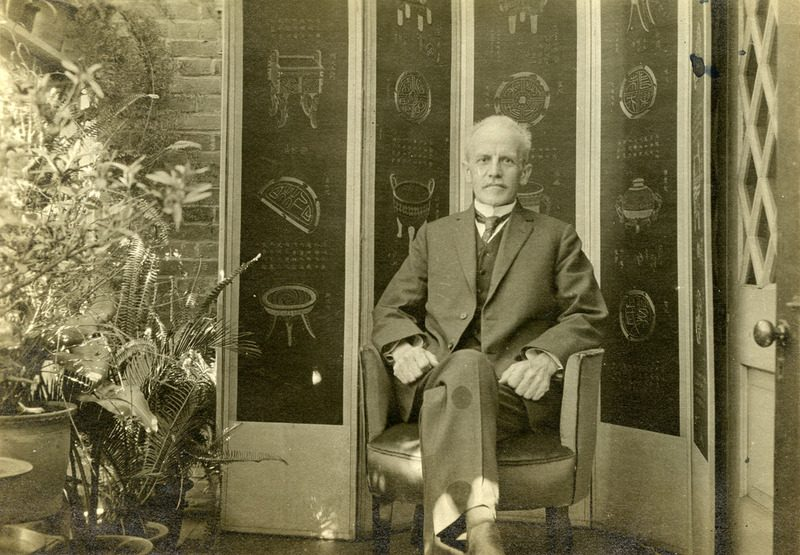

1859년 영국에서 태어나 어린 시절 미국으로 건너간 언더우드는, 신학을 공부하며 '아직 복음이 닿지 않은 곳'으로 가기를 꿈꿨어요. 그렇게 택한 땅이 조선이었죠. 1885년 부활절, 그는 감리교의 아펜젤러와 같은 배로 제물포에 내렸어요 — 둘 다 스물대여섯의 젊은이였죠.
아직 직접 전도가 조심스러운 때라, 그는 먼저 학교와 고아원을 세우고 의료 선교를 도우며 신뢰를 쌓았어요. 곧 <b>새문안교회</b>를 세워 한국 장로교의 첫 뿌리를 놓았고, 전국을 다니며 교회를 일궜죠.
그의 가장 큰 자취는 '글'에 있었어요. 그는 한국어를 깊이 익혀 <b>한영사전</b>과 문법서를 펴내고, 다른 선교사·한국인들과 함께 <b>성경을 한글로 번역</b>하는 일에 평생을 바쳤어요. 누구나 직접 성경을 읽게 하려는 이 일이, 한글의 위상을 끌어올리는 데도 한몫했죠.
그는 교육에도 힘써 훗날 연희전문학교(지금의 연세대학교)로 이어지는 학교를 세웠어요. 1916년 건강이 나빠져 미국에서 숨졌지만, 그의 아들·손자로 4대에 걸쳐 언더우드 가문은 한국과 깊은 인연을 이어 갔어요 — '원두우'라는 한국 이름으로요.